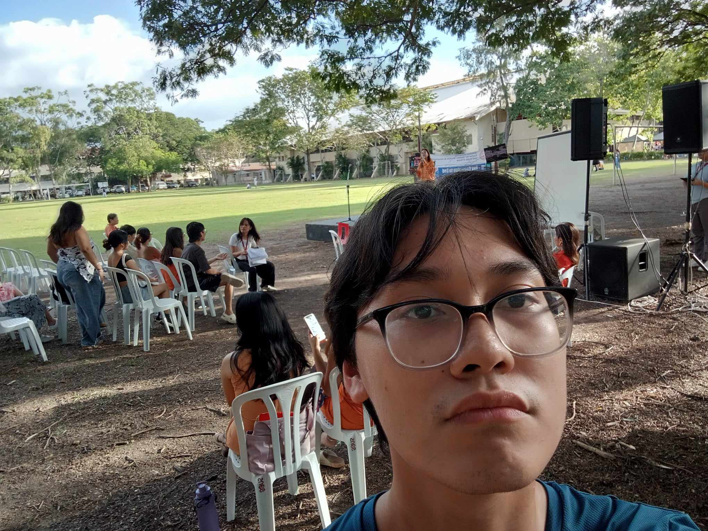

AdvocaSIYA: An Advocacy Fair
Women's rights, bringing attention to gender equality and related issues
Vernon Hall Donation to Janitors
A heartfelt gesture by the residents to show appreciation for the janitors who keep our living spaces clean and comfortable
DOST Blood Donation
Knowing that my donation could help save lives made it a deeply rewarding experience
Sto Nino Orphanage White Gift
A meaningful experience create something special for the kids